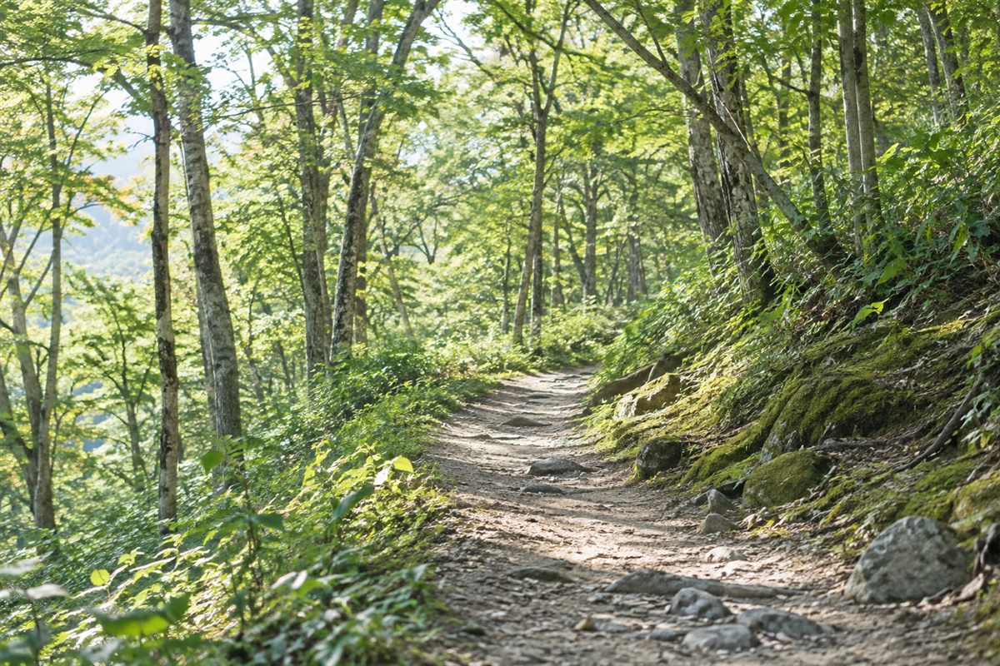
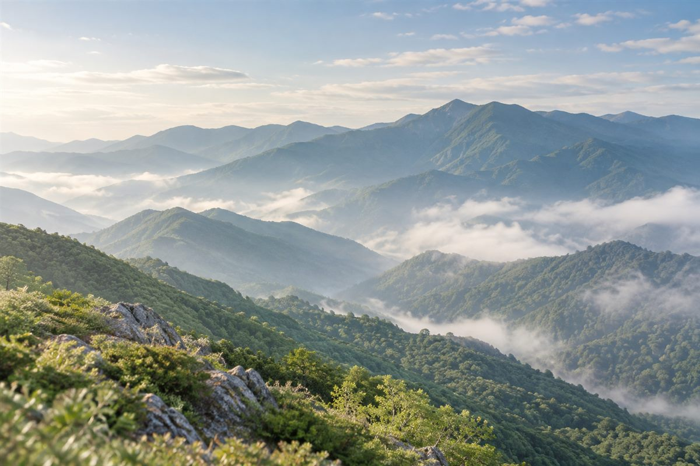

ツキノワグマの地域向け
秋の山でのクマ対策
秋の山へ出かける前に、持ち物、時間帯、山中での行動を確かめてください。遭遇時の項目は、長野県が本州のツキノワグマを想定して示す公式案内です。
ここで紹介する道具や行動は、遭遇や被害を防ぐことを保証するものではありません。北海道のヒグマに同じ案内を当てはめられるかは確認できていないため、北海道へ行く場合は現地の自治体・関係機関の案内を確認してください。

何を持てばいいか
長野県は、クマ鈴、ラジオ、笛など、自然界にはない音を鳴らして人の存在を知らせるよう案内しています。出発前に鈴や笛を実際に鳴らし、ラジオを使うなら音が出るか確かめてください。
道具を用意したら、下に挙げる山中での行動と、行き先の自治体・現地管理者が出す最新情報にも目を通してください。
いつ注意するか
秋（9〜11月）
秋は冬眠前の過食期で、クマの活動が活発になります。同時に、秋の行楽シーズンは入山者が増える時期でもあります。山にはクマがいると思って行動してください。
早朝と夕方
早朝と夕方は出没しやすい時間帯です。行程表でこの時間帯に歩く区間を見直し、出発前には自治体や現地管理者から案内が出ていないか確かめてください。
山での行動の原則
長野県の案内では、音を出すことに加えて、次の行動が示されています。
- 単独行動を避ける。
- 茂みの近くでの行動は極力避ける。
- 山にはクマがいると思って行動する。
- クマの足跡やフンを見つけたら、それ以上近づかず引き返す。
痕跡を見つけたときは、様子を見ようとして近づかず、その先へ進まずに引き返します。予定していた行程を続けることよりも、公式に案内されている行動を優先します。
クマに遭遇したとき
長野県が本州のツキノワグマを想定して示しているのは、以下の4項目です。
- クマから目を離さない。
- 刺激しないよう、ゆっくりその場から離れる。
- 背を向けて走って逃げることは絶対に避ける。クマは逃げるものを追う習性があります。
- 逃げることが困難な場合は、うつ伏せになり、頭と首を手で守る姿勢をとる。被害を軽減する方法として推奨されています。
出典：長野県「ツキノワグマについて知っていただきたいこと」
この4項目は本州のツキノワグマを想定したものです。北海道のヒグマに同じ案内を当てはめられるかは確認できていません。北海道へ行く場合は、現地の自治体や関係機関の案内を確認してください。

行き先ごとの最新情報を確認する
入山前に、行き先の都道府県・市町村と、登山道や施設を管理する現地管理者のページを開いてください。出没情報や注意喚起は、予定する日時と場所に対応するものを見ます。
このページで参照した一地域の案内から、別の日や別の地域の状況は判断できません。
次に読む
秋の被害統計と、クマ側・人側の要因は「なぜ秋にクマの被害が増えるのか」で整理しています。英語で同じ基本行動を確認する場合は「Bear encounters: what to know before hiking」をご覧ください。